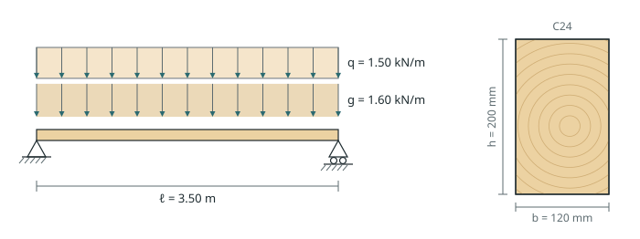

Example 1
beam
01. Floor beam – simply supported beam

Tries every common cross-section and checks bending (with lateral torsional buckling), shear and deflection for all load combinations (EN 1990). Recommends the lightest section that works.
01_Floor_Beam/